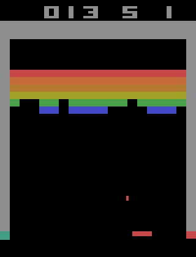
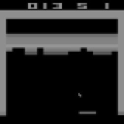
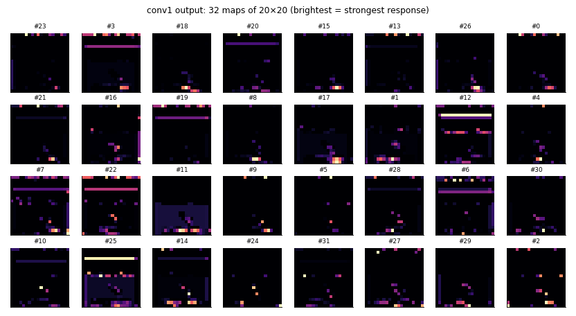
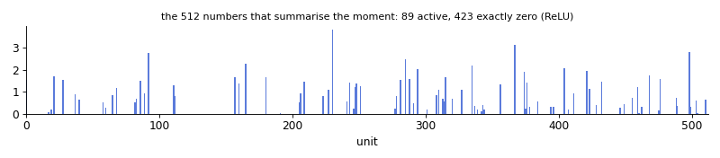
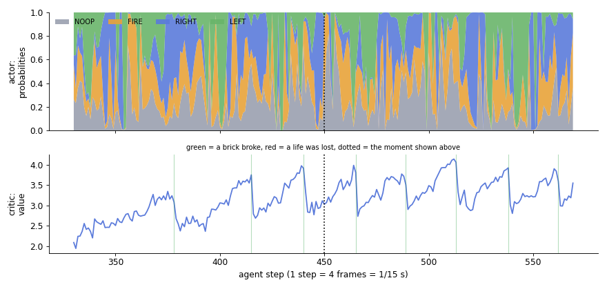
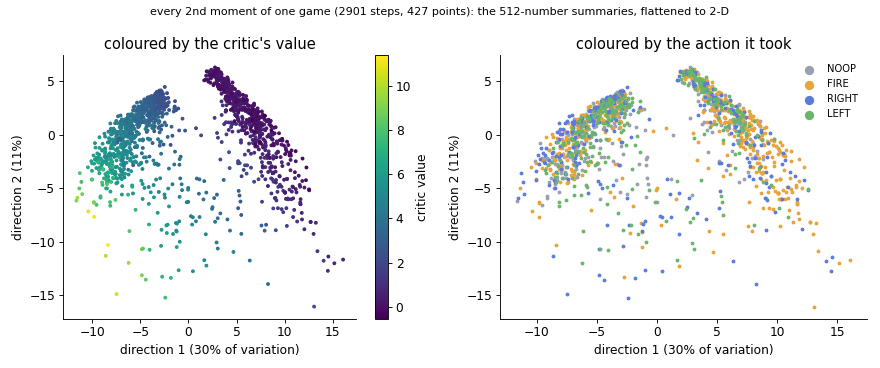

The model
One small neural network, about 1.7 million learned numbers, turns four gray pictures into two answers: which button to press, and how well the game is going. It was trained with Proximal Policy Optimization (PPO). This page explains the model itself for an engineer who has never seen one; the videos below also explain how PPO trains it.
Inside the model
The short version
- A function: input = 4×84×84 numbers (the last four screens), output = 4 probabilities + 1 number.
- Two parts: a shared "torso" (3 convolution layers + 1 dense layer) that turns pixels into a 512-number summary, and two "heads" that read it.
- The actor head picks the button; the critic head estimates the reward still to come. The critic is only used during training, to judge the actor's choices.
- All 1,686,693 numbers (weights) started random and were adjusted by PPO in 9,765 rounds of updates (16 gradient steps each), using nothing but the game score.
The architecture, to scale
Box height ≈ how much the layer keeps about the picture; "w" = learned weights. 95% of all weights sit in the one dense layer, which connects every one of the 3,136 numbers coming out of conv3 to each of its 512 outputs. The convolution layers are cheap because each filter is reused at every position of the image.
Follow one moment through the network
A real moment from a 427-point game of the final model. Left to right: the screen; what the network receives (the newest of its 4 pictures); what conv1 outputs (32 maps); the 512-number summary; and the two answers.

screen
input (1 of 4)

| Output | Value | Meaning |
|---|---|---|
| actor: NOOP | 33% | probabilities; the agent samples its button from them (here it drew NOOP) |
| actor: FIRE | 62% | |
| actor: RIGHT | 0% | |
| actor: LEFT | 5% | |
| critic: value | 3.03 | expected future reward: bricks still to break in this life, each counted as 1 and discounted by 0.99 per step |
The pictures of all three convolution layers, the learned filters and saliency maps are on How it sees.
The two heads over a game
240 consecutive steps (16 seconds of play). Top: the actor's four probabilities, stacked. Bottom: the critic's value; green lines = a brick broke, dotted = the moment above. The value rises as the next brick gets closer and drops the instant it breaks: that reward is now in the past, no longer "to come". The probabilities change every step as the paddle chases the ball. FIRE is often likely even while the ball is in play; there it does nothing, so the agent never needed to unlearn it.

The model's own map of the game
Every second moment of the same game, its 512-number summary, flattened onto two dimensions with PCA (the two directions in which the summaries differ most; together they hold 41% of the variation). Each dot is a moment. The summaries fall into two groups:
- left: the early game, with about 73% of the wall still standing; the critic's value is high (about 4.3): many bricks still to win;
- right: the late game, with about 7% of the wall left; the value is low (about 0.6): few bricks remain.
Nobody told the network about game phases. It found them because they matter for the value. The right panel shows the actions are mixed within both groups: which button to press depends on finer details (the ball and the paddle) than the phase.

How training shaped it
How similar each layer's weights are after 0.5 M frames and at the end (correlation; 1.0 = unchanged). The first layer changed least: its crude detectors were useful early. The deeper the layer, the more it changed; the heads most of all. The actor's weights grew tenfold in size (norm 0.5 → 5.0): a near-uniform random policy became a confident one.
| Layer | correlation 0.5 M vs 40 M | 10 M vs 40 M | weight norm 0.5 M → 40 M |
|---|---|---|---|
| conv1 | 0.78 | 0.93 | 8.3 → 11.0 |
| conv2 | 0.63 | 0.87 | 12.1 → 19.9 |
| conv3 | 0.67 | 0.88 | 11.9 → 19.3 |
| dense | 0.48 | 0.79 | 32.8 → 69.5 |
| actor | 0.43 | 0.90 | 0.5 → 5.0 |
| critic | 0.28 | 0.86 | 1.1 → 2.6 |
The explainer videos about PPO
How the training method works: the loop, the advantages, the clipped update, and the agent at four stages.
The network, layer by layer
The "Nature CNN" from DeepMind's 2015 DQN paper, with two heads. About 1.69 million weights; almost all of them (1.6 M) sit in the one dense layer.
| Layer | Shape out | Weights | What it does |
|---|---|---|---|
| Input | 4 × 84 × 84 | – | last 4 gray frames, bytes divided by 255 |
| Conv 8×8, stride 4, ReLU | 32 × 20 × 20 | 8,224 | coarse features: walls, bricks, the paddle, the ball's smear across frames |
| Conv 4×4, stride 2, ReLU | 64 × 9 × 9 | 32,832 | combinations: "ball near the paddle", "a gap in the wall" |
| Conv 3×3, stride 1, ReLU | 64 × 7 × 7 | 36,928 | finer positions |
| Dense, ReLU | 512 | 1,606,144 | the summary of the situation both heads read |
| Actor head | 4 | 2,052 | logits → probabilities for NOOP, FIRE, RIGHT, LEFT |
| Critic head | 1 | 513 | value: discounted (clipped) reward still to come |
Weights start orthogonal (gain √2; 0.01 for the actor so the first policy is almost uniform; 1 for the critic).
How PPO learns, step by step
1. Rollout
8 games run side by side (envpool). For 128 steps the network picks every action by sampling from its own probabilities. That gives a batch of 1,024 moments: the observation, the action, its log-probability under the policy that chose it, the critic's value and the clipped reward.
2. Advantages with GAE
For each moment, the one-step surprise is δ = r + γ·V(next) − V(now). The advantage adds up the future surprises, weighted down by (γλ)^k with γ = 0.99 and λ = 0.95: A = δ₀ + 0.94·δ₁ + 0.94²·δ₂ + … , stopping where a life ends. The value target is A + V. Advantages are normalised per minibatch (mean 0, std 1).
3. The clipped update
The ratio ρ = π_new(a|s) / π_old(a|s) says how much more (or less) likely the action has become. PPO maximises min(ρ·A, clip(ρ, 0.9, 1.1)·A): once an action's probability has moved 10% in the direction the advantage asks for, the objective stops paying for more. Loss = −policy objective + 0.5 × value loss (also clipped) − 0.01 × entropy. Adam, gradient norm clipped at 0.5.
4. Repeat
4 passes (epochs) over the batch in 4 shuffled minibatches of 256, so 16 gradient steps; then the batch is discarded. 9,765 iterations × 1,024 steps × 4 frames = 40 M frames. The learning rate falls linearly from 2.5·10⁻⁴ to 0 (the schedule was stretched from 10 M to 40 M frames at 1.5 M frames).
All settings
| Setting | Value | Setting | Value |
|---|---|---|---|
| Frames | 40,000,000 (10 M agent steps; first planned as 10 M frames) | Parallel games | 8 |
| Steps per rollout | 128 | Batch | 1,024 |
| Epochs × minibatches | 4 × 4 (256 each) | Learning rate | 2.5·10⁻⁴ → 0, linear |
| Clip ε | 0.1 (policy and value) | γ, λ | 0.99, 0.95 |
| Entropy coef | 0.01 | Value coef | 0.5 |
| Max grad norm | 0.5 | Adam ε | 1·10⁻⁵ |
| Seed | 1 | Source | CleanRL ppo_atari_envpool.py |